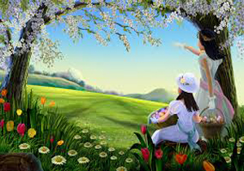
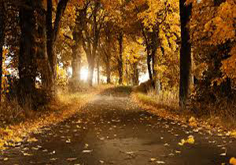

|

Pranvera njera nder stinet e mia me te preferuara, ajo eshte stina e cila te gjithve na e largon monotonine e dimrit, dhe na sjell vetem lumturi e bukuri natyrore siç jane: Gjelbërimi i fushave, Çelja e luleve dhe fillimi i lulëzimit te pemëve. Pra pranvera largon motin e ftohtë duke e sjellur një mot shumë të dëshirueshëm me diell, por nganjëherë edhe me shi, sepse shiu sjell bukën për motin e ardhshëm. Pranvera si stinë sipas statistikave të ndryshme dhe si zakonisht e përmendur fillon më 20 Mars. Kjo stinë e bukur na ben që pra të mesohemi me kalim nga moti i ftohte ne nje mot pak me te ngrohte e pastaj te mesohemi edhe me veren e nxehte. Pranvera eshte nje stine e cila mund te shfrytezohet zakonisht per te shkuar ne pushim malor, sepse gjate veres preferohet qe te vizitohen plazhet apo deti, per shkak se moti eshte me i ngrohte.

Vjeshta, një stinë ku ngjyra e gjelbër merr fund. Kjo stinë stinë e bukur, e cila natyrës i jep ngjyrën e bukur prej ari. Stina e vjeshtës na sjell një mot jo shumë të preferushëm për fëmijët, të cilët nuk janë adhurues të shiut dhe fillimit të të ftohtit pa borë. Por, vjeshta është një stinë shumë e rëndësishme për të gjithë, e sidomos për bujkun. Gjatë kësaj stine, shumë fruta pemësh bëhen gati për vjelje, e prej kryesorëve është rrushi. Gjithashtu bujku lëron arën duke e bërë gati për mbjelljen e misrit. Pra, vjeshta është një stinë e begatshme e cila na begaton gjatë kësaj kohe me rrush, dardha, molla e shumë pemë e perime të tjera të cilat piqen në këtë stinë. Gjithashtu, vjeshta është një stinë e cila fillon më 23 shtator dhe mbaron më 21 dhjetor.
|